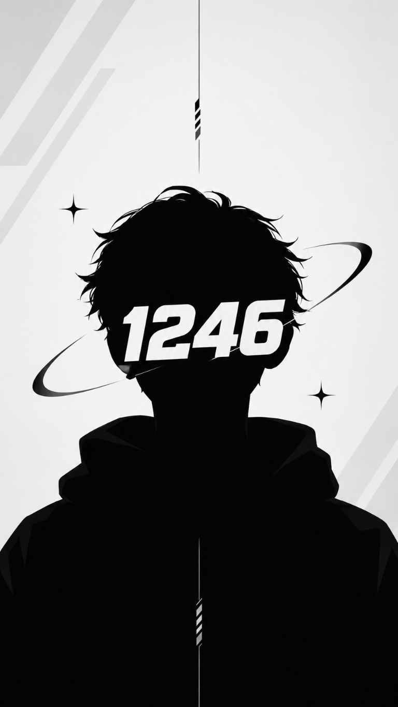

Dito Erfana
Software Development Student
Known as 1246
01Introduction
Beyond the Code, There’s a Person.
I'm Dito Erfana, known as 1246, and a software development student with a growing interest in technology, creativity, and building digital experiences.
Beyond programming, I'm someone who enjoys exploring different interests, discovering new things, and appreciating the little moments of life.
- Education
- SMK Negeri 1 Pacitan
- Program
- Rekayasa Perangkat Lunak
- Current level
- Grade XII
- Academic year
- 2026/2027
- Main interest
- Web Development
- Location
- Indonesia
02Developer Profile
How I Explore Technology.
My Approach
Learn through exploration, build through experimentation, and improve through iteration.
I enjoy turning ideas and simple designs into usable pages, and understanding how the interface, data, and user needs connect. I’m learning Laravel step by step and build through continuous practice.
Areas I’m exploring
03Beyond Technology
Life Beyond the Screen.
Movies · Universe
Marvel Cinematic Universe
A universe of stories, characters, and extraordinary adventures.
Hobby · Beyond the screen
Volleyball
A passion beyond the digital world.
Favorite color
Blue
A personal favorite, shown here as a local accent—not a change to the site theme.
04Personal Philosophy
Enjoy Your Life Today.
Life is more than achievements, deadlines, and expectations. Enjoy the present, appreciate the little things, and keep moving forward.
— 1246
05Future Vision
A Life Worth Enjoying.
I want to build a life where success is not measured only by achievements, but also by experiences, meaningful connections, and the ability to enjoy every moment along the way.
Keep exploring. Keep creating. Keep enjoying life.